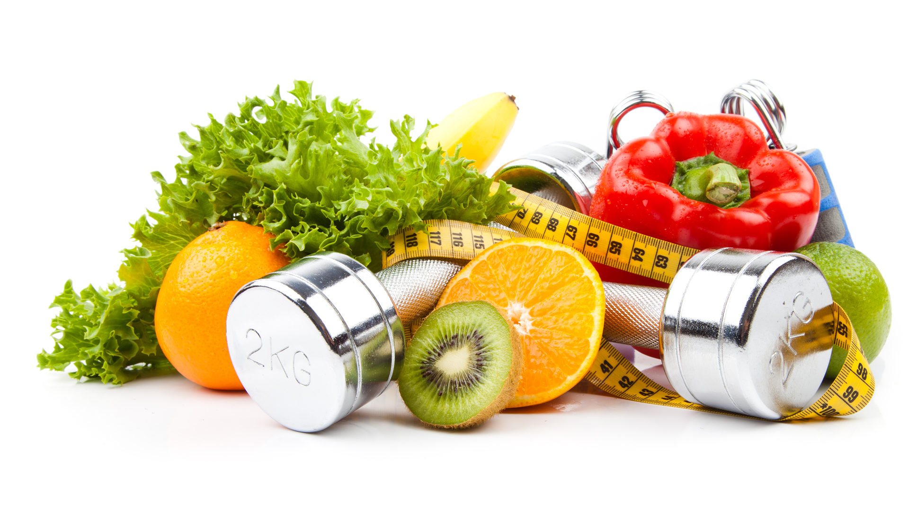

Opinión: ¿Vale la pena un plan nutricional?
En esta opinión personal, exploramos si invertir en un plan nutricional es realmente beneficioso. Basado en experiencias y evidencia, analizamos pros, contras y cuándo es ideal.
Ventajas de un Plan Nutricional
- Personalización: Adaptado a tus necesidades, metas y restricciones.
- Resultados más rápidos: Guía experta acelera el progreso en pérdida de peso o ganancia muscular.
- Educación: Aprendes sobre nutrición, fomentando hábitos sostenibles.
- Apoyo motivacional: Seguimiento y ajustes mantienen el compromiso.
Desventajas de un Plan Nutricional
- Costo: Puede ser caro, desde 50-200 USD mensuales dependiendo del profesional.
- Tiempo de adaptación: Requiere disciplina para seguirlo estrictamente.
- No es mágico: Depende de tu consistencia; no reemplaza el ejercicio.
- Riesgo de dependencia: Algunos se sienten perdidos sin guía constante.
¿Cuándo Vale la Pena?
Un plan vale la pena si tienes metas específicas como perder peso, ganar masa muscular o manejar condiciones como diabetes. También si has fallado con enfoques DIY o necesitas motivación. En mi opinión, sí vale la pena para la mayoría, ya que la inversión en salud es invaluable.
| Situación | ¿Vale la Pena? |
|---|---|
| Principiante en nutrición | Sí, para aprender bases sólidas |
| Persona ocupada | Sí, ahorra tiempo en planificación |
| Presupuesto limitado | No, opta por recursos gratuitos primero |
Consejos Finales
Elige un nutricionista certificado. Combina el plan con ejercicio y descanso. Recuerda, la nutrición es un viaje; un plan es una herramienta, no una solución definitiva.